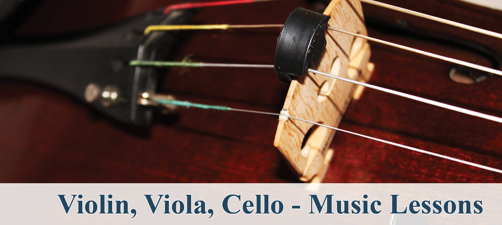
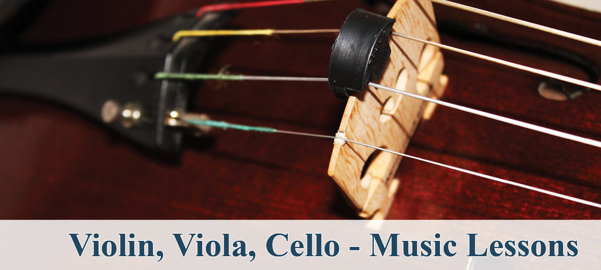

slide presentation


 

Welcome
The Center for Performing Arts is a location for artists, community members, and students of many interests and disciplines to gather and develop their work. As an organization, the Center is dedicated to the vitality of the creative process and supports practitioners from a range of traditions to teach, learn, workshop, and practice in order to sustain their work/life and become creative and contributing members of their communities.
The Center for Performing Arts was constructed as a convent for Incarnation Catholic Church in 1913. Well-suited to house artist’s studios, dance studios, offices and meeting spaces, in 1995 the arts center project was conceived of and converted into its current use by Jackie Hayes with support from community members and artists.
Since then, the Center has provided hundreds of individual dancers, theaters, movement practitioners, performance companies, dance companies, bodyworkers, therapists, and teachers with affordable office, rehearsal and audition space.
In the News
Center for Performing Arts Celebrates 20 Years
Southwest Journal Article - September 11, 2015
It was built in 1923 as a convent, housing nuns affiliated with Incarnation Catholic Church. Then it was a shelter for women. Then New York-transplant Jackie Hayes saw the for-sale sign.
Hayes created the Center for Performing Arts at 3754 Pleasant Ave.S. 20 years ago, making artist studios out of the nun's living quarters and converting the chapel and community room into dance studios. In recent years she has leased land for a Kingfield Neighborhood Association community garden. Honeybees managed by the Kingfield neighborhood took up residence in new hives on the rooftop this year. Kingfield is currently constructing a community bread oven onsite, with the first pizzas baking at the Center's anniversary celebration in Octobers.
Click to read more...